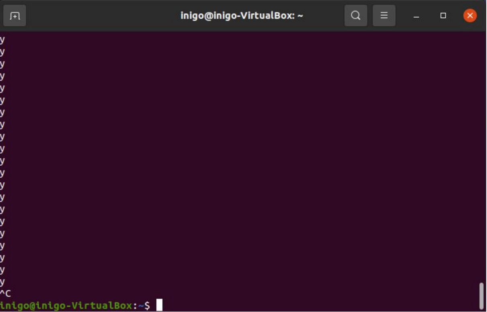
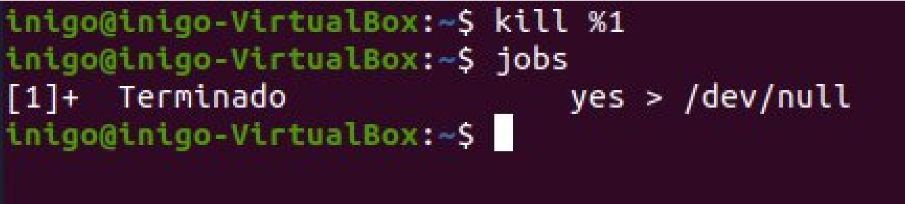
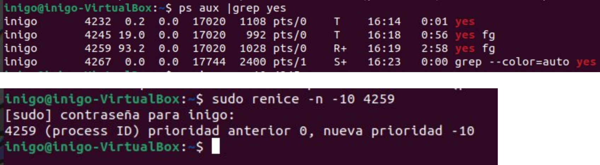
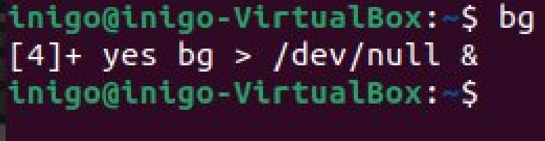
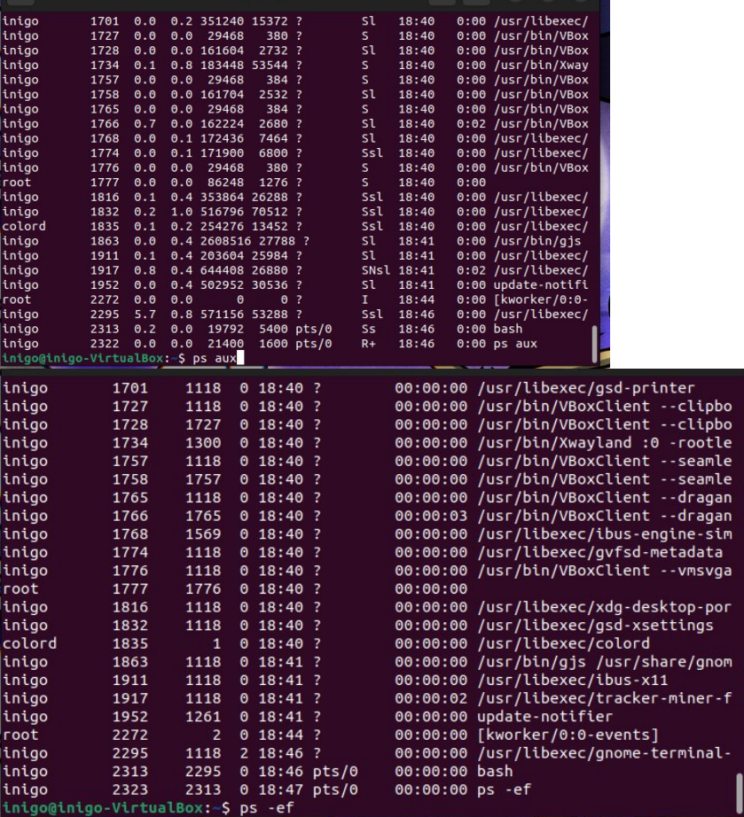
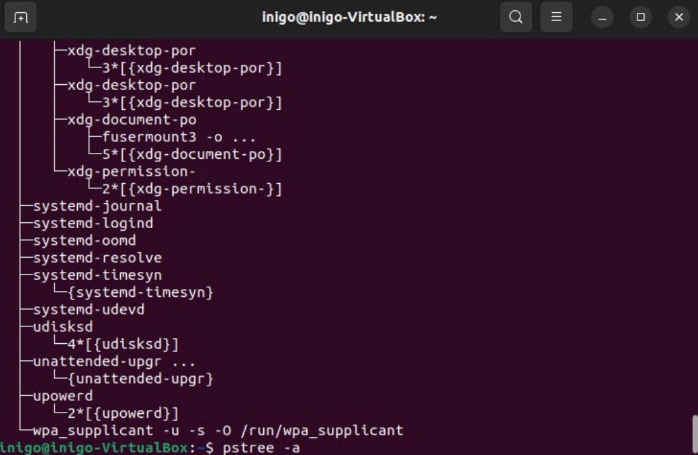
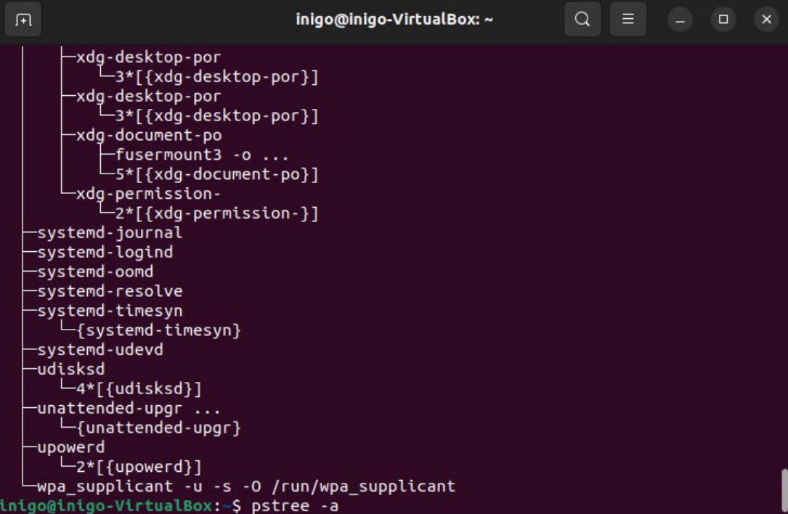
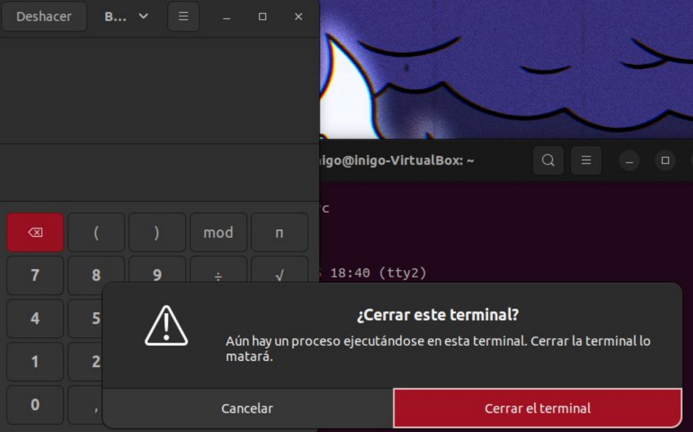
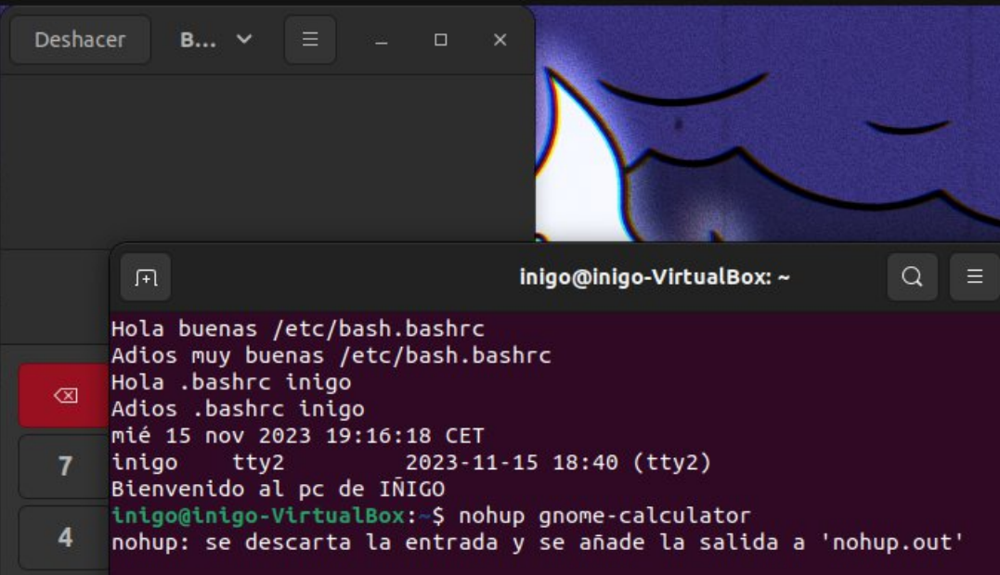

UNIX: Process and Task Control / Personal Task
Author: Iñigo Durán Sanz
This guide explores process management in UNIX/Linux systems, covering from background execution to priority management and signals.
Practical Exercises
1. The yes command
The yes command sends an infinite output of "yes" to the terminal.
- Observation: When executed, it saturates the terminal and "dirties" the screen with continuous text.
2. Interruption with CTRL+C
We can stop the "aggressive" execution of the previous command using the interrupt key combination.

3. Redirection to /dev/null
We run yes > /dev/null.
- Result: The screen no longer fills with text (output is discarded), but the terminal remains busy and we don't get the prompt back.
4. Interruption again
We cancel the previous process with CTRL+C to regain control.

5. Background Execution (&)
We run yes > /dev/null &.
- Result: The system returns the prompt immediately.
- Data: We get the Job Number and the PID (Process ID).

6. Job Status
We use the jobs command to verify that the process is still running in the background.

7. Normal Termination (kill)
We terminate the process using the kill %1 command (or the corresponding job number) and verify with jobs.

8. Termination by PID
We launch the process again and this time we "kill" it using its specific PID: kill <PID>.

9. Suspend Processes (CTRL+Z)
We launch the process in the foreground and pause/suspend it with CTRL+Z.

10. Verify Suspension
We check with jobs that the status is "Stopped".
11. Resume in Foreground (fg)
We bring the suspended task to the front with the fg command.

12. Process Priority (nice/renice)
To run a process with lower priority (higher nice value, e.g. 10), we use nice. To change it during execution, renice.
- Note:
-10usually requires root privileges to increase priority.

13. Suspend again
We temporarily stop the execution with CTRL+Z.

14. Resume in Background (bg)
We reactivate the process but keep it in the background with bg.

15. Multiple Process Management
We repeat the management (suspend, bg, fg) using commands like sleep 1000 to have several simple processes.

16. Complex Demonstration
Scenario with at least 5 simultaneous processes: suspending, resuming and sending signals to several of them.

17. Interactive Visualization (top / htop)
Use of interactive tools to view resource consumption in real time.

18. The ps command and its variants
Use of the ps command with various different combinations to filter and format the output:
ps commands
Examples:
psps auxps -efps -ejHps -tps -ax --forestps -e -ops -eo

19. The pstree command
Process tree visualization to understand the parent-child hierarchy.
 


20. Child Processes and Terminal (gnome-calculator)
When launching gnome-calculator from the terminal and closing the latter, the calculator closes.
- Reason: The calculator is a child process of the shell; when the parent dies, the children die (SIGHUP).

21. Using nohup
Run nohup gnome-calculator. When closing the terminal, the calculator remains open.
- Reason:
nohupignores the hangup signal (HUP).

22. Total Independence
With nohup, closing the application (calculator) does not affect the terminal, and closing the terminal does not affect the application. They are independent.
23. nohup Output Redirection
To avoid the default nohup.out file and discard the output:
nohup gnome-calculator > /dev/null 2>&1 &
This redirects both standard output and error to "nothing".